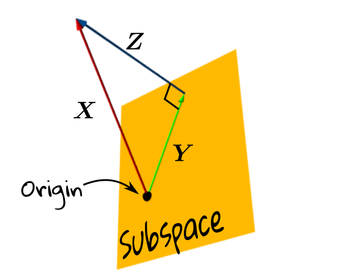
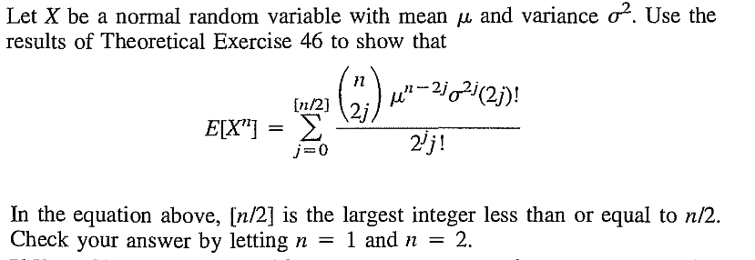
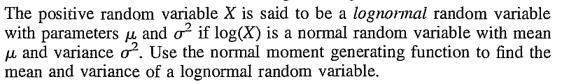
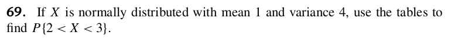
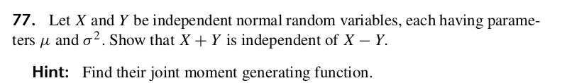
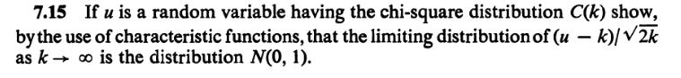

|
|---|
Proof:Should be covered in your Vectors and Matrices course.[QED]
At last we come to the definition of multivariate normal. The only point that you might feel uncomfortable about is the choice of $A.$ In the univariate case, obtaining $\sigma$ from $\sigma^2$ was straightforward: we could just take the (unique) nonnegative square root. But in the multivariate set up there are, in general, infinitely many choices for $A$ such that $\Sigma=AA'.$ Which one should we take? Fortunately it does not matter here, because as we are going to show now, any choice leads to the same distribution of $A\v X+\v\mu.$ For this purpose we shall use characteristic functions.EXERCISE 1: Follow the definition to obtain the density of $\v Y = \left[\begin{array}{ccccccccccc}Y_1\\Y_2 \end{array}\right]\sim N_2\left(\left[\begin{array}{ccccccccccc}10\\20 \end{array}\right],\left[\begin{array}{ccccccccccc}1 & 0\\0 & 4 \end{array}\right]\right).$ You may use $A = \left[\begin{array}{ccccccccccc}1 & 0\\0 & 2 \end{array}\right].$
Proof:Not in this course.[QED]
Now let us return to the definition multivariate normal.EXERCISE 2: Write down the characteristic function of $N_2(\v\mu,\Sigma)$ where $\v\mu=\left[\begin{array}{ccccccccccc}1\\2 \end{array}\right]$ and $\Sigma=\left[\begin{array}{ccccccccccc}2&1\\1&3 \end{array}\right].$
EXERCISE 3: There are algorithms that will take $\Sigma$ as input and produce an $A$ as output suh that $\Sigma=AA'.$ The Cholsesky (read as ko-less-key) decomposition algorithm is one such (implemeted in the R function chol). But for small matrices, it is possible to construct $A$ by hand. Suppose $\Sigma=\left[\begin{array}{ccccccccccc}2&1\\1&3 \end{array}\right].$ Find a lower triangular $A$ with $\Sigma=AA'.$
EXERCISE 4: Find $$\v\mu$ $ and $\Sigma$ if $N_2(\v\mu,\Sigma)$ has characteristic function $\xi(t_1,t_2) = \exp(-2t_1^2-t_2^2+t_1t_2)$ for $(t_1,t_2)\in{\mathbb R}^2.$
EXERCISE 5: True or false: The characteristic function of $N_m(\v\mu,\Sigma)$ is real-valued if and only if $\v\mu=\v0.$
Proof: Be careful that the variance matrix is $B\Sigma B'$ and not $B'\Sigma B.$
Let $\Sigma = AA'.$ Then, by definition, $\v Y$ has the same distribution as that of $A\v X+\v\mu,$ where $\v X\sim N_m(\v,I).$ So $B\v Y+\v c$ has the same distribution as that of $B(A\v X+\v\mu)+\v c = BA\v X + (B\v\mu+\v c).$ This is, by definition, $N_n(B\v\mu+\v c, BAA'B') = N_n(B\v\mu+\v c, B \Sigma B').$ [QED] The theorem could also be proved using characteristic function.Proof: Extracting a subvector is same as premultiplying by a matrix. The matrix is obtained by selecting appropriate rows of the identity matrix.
Apply the affine transform result with $B=$ this matrix and $\v c=\v0$ to prove this theorem. [QED] The second corollary is the multivariate analogue of univariate standardisation: If $X\sim N(\mu,\sigma^2)$ for $\sigma^2>0,$ then $\frac{X-\mu}{\sigma}\sim N(0,1).$Proof: Direct application of the theorem. Just notice that $A$ must be nonsingular, because had it been singular, $AA'$ would have been singular, as well. [QED]
EXERCISE 6: Let $$\left[\begin{array}{ccccccccccc}X_1\\X_2\\X_3\\X_5\\X_5 \end{array}\right]\sim N_5\left(\left[\begin{array}{ccccccccccc}1\\2\\3\\4\\5 \end{array}\right],\left[\begin{array}{ccccccccccc}50 & 42 & 41 & 48 & 27\\ 42 & 40 & 38 & 40 & 25\\ 41 & 38 & 51 & 53 & 39\\ 48 & 40 & 53 & 61 & 39\\ 27 & 25 & 39 & 39 & 38 \end{array}\right]\right). $$ Find the distribution of $\v Y = (2X_1-3X_4+X_5,~~X_1+X_4)'.$
[Hint: Don't struggle with the full $5\times5$ matrix.]EXERCISE 7: If $X_1,...,X_n$ are IID $N(0,1).$ Let $\v X = (X_1,...,X_n)'.$ Let $A_{n\times n}$ be any orthogonal matrix. Then show that the components of $A\v X$ are again IID $N(0,1).$
Proof: Let $\Sigma = AA'.$ Then $\v Y$ has the same distribution as $A\v X+\v \mu$ where the $\v X$ has components IID $N(0,1).$
So $E(\v X) = \v 0$ and $V(\v X) = I.$ Hence $E(\v Y) = E(A\v X+\v\mu) = A E(\v X)+\v\mu = \v\mu,$ and $V(\v Y) = V(A\v X+\v\mu) = A V(\v X)A' = AA'=\Sigma.$ [QED]EXERCISE 8: Find $E(\v X)$ and $V(\v X)$ if $\v X$ has characteristic function $\xi(t_1,t_2) = \exp(-2t_1^2-t_2^2+t_1t_2)$ for $(t_1,t_2)\in{\mathbb R}^2.$
EXERCISE 9: If $\v X\sim N_m(\v\mu,\Sigma)$ and the components of $\v X$ are all independent, then what can you say about the structure of $\Sigma?$
Proof:Direct application of definition.[QED]
Proof: The characteristic function of $\v X$ is $\xi_{\v X}(\v t)=\exp\left(-\frac 12\v t'\Sigma\v t+i\v t'\v \mu\right).$
Writing $\v t =\left[\begin{array}{ccccccccccc}\v t_1\\\v t_2 \end{array}\right], $ we have $$\v t'\Sigma\v t =\left[\begin{array}{ccccccccccc}\v t_1' & \v t_2' \end{array}\right]\left[\begin{array}{ccccccccccc}\Sigma_{11} & \Sigma_{12}\\\Sigma_{12}' & \Sigma_{22} \end{array}\right]\left[\begin{array}{ccccccccccc}\v t_1\\\v t_2 \end{array}\right] = \v t_1'\Sigma_{11}\v t_1+ \v t_1'\Sigma_{22}\v t_2,$$ since $\Sigma_{12}=O.$ Again $$\v t'\v \mu = \left[\begin{array}{ccccccccccc}\v t_1' & \v t_2' \end{array}\right]\left[\begin{array}{ccccccccccc}\v \mu_1 & \v \mu_2 \end{array}\right] = \v t_1'\v \mu_1+\v t_2'\v \mu_2$$ So the characteristic function factorises as $$\xi_{\v X}(\v t)\equiv \xi_{\v X_1}(\v t_1)\xi_{\v X_1}(\v t_2),$$ and hence $\v X_1$ and $\v X_2$ are independent, as required. [QED] An important corollary is the following result.Proof: Immediate rom the theorem (try it!). [QED]
A further corollary isProof:
Let $P_S$ and $P_T$ be the orthogonal projection operators for $S$ and $T.$ Then they are both symmetric idempotent matrices with $P_SP_T = 0.$ Now apply the last theorem. [QED]EXERCISE 10: Let $\v X\sim N_n(\v\mu,I).$ Let $\v a, \v b\in{\mathbb R}^n$ be orthogonal to each other. Show that $\v a'\v X$ and $\v b'\v X$ must be independent.
EXERCISE 11: Let $\left[\begin{array}{ccccccccccc}\v X_{m\times 1}\\\v Y \end{array}\right] \sim N_{m+n}\left(\left[\begin{array}{ccccccccccc}\v \mu_1\\\v\mu_2 \end{array}\right], \left[\begin{array}{ccccccccccc}A_{m\times m} & B\\B' & C \end{array}\right]\right).$ What is the distribution of $\v X$ and $\v Y$ separately?
EXERCISE 12: (Continuation of the last problem) If $A$ is nonsingular, then show that $\v Y-B'A ^{-1}\v X$ and $\v X$ are independent.
EXERCISE 13: (Continuation of the last problem) Write $\v Y = B'A ^{-1} \v X + (\v Y-B'A ^{-1}\v X)$ and show that the conditional distribution of $\v Y$ given $\v X=\v x$ is $N_n (\v \mu_2+B'A ^{-1}(\v x-\v\mu_1), C-B'A ^{-1} B).$ [Does this remind you of multiple regression?]
EXERCISE 14: Let $\v X\sim N_n(\v0,I).$ We take some subspace of ${\mathbb R}^n,$ and project $\v X$ on it to get a vector $\v Y.$ Let $\v Z = \v X-\v Y.$ The situation is depicted pictorially below.
|  |
|---|
Proof: Since $\Sigma$ is NND, we can write $\Sigma = AA'$ for some $A_{m\times m}.$ So $N_m(\v\mu,\Sigma)$ is the distribution of $A\v X+\v\mu,$ where $\v X$ has IID $N(0,1)$ components.
Clearly, the density of $\v X$ is $$\frac{1}{\sqrt{(2\pi)^n}}\exp\left(-\frac 12\v x'\v x\right)\mbox{ for }\v x\in{\mathbb R}^n.$$ Now, since $\Sigma$ is nonsingular, so must be $A$, and hence the transform $\v Y = A\v X+\v \mu$ is a bijection. The inverse transform is $\v X = A ^{-1}(\v Y-\v\mu).$ The Jacobian of this inverse transform is $A ^{-1}.$ So the Jacobian formula gives (check!) the following density for $\v Y = A\v X+\v \mu$ $$\frac{|det(A ^{-1})|}{\sqrt{(2\pi)^n}}\exp\left(-\frac 12(\v y-\v\mu)'(A ^{-1})'A ^{-1}(\v y-\v\mu)\right)\mbox{ for }\v y\in{\mathbb R}^n.$$ Since $\Sigma = AA',$ hence $|det(A ^{-1})| = \frac{1}{\sqrt{det(\Sigma)}}$ and $(A ^{-1})'A ^{-1} = (AA') ^{-1} = \Sigma ^{-1}.$ So the density may be written as $$\frac{1}{\sqrt{(2\pi)^n det(\Sigma)}}\exp\left(-\frac 12(\v y-\v\mu)'\Sigma ^{-1}(\v y-\v\mu)\right)\mbox{ for }\v y\in{\mathbb R}^n,$$ as required. [QED]Proof: Let $\v Y$ have dispersion matrix $\Sigma$ which is singular.
Let, if possible, $\v Y$ have density. Then $\exists \v a\neq\v0~~\Sigma \v a = \v 0.$ So $\v a'\Sigma \v a = 0.$ But $\v a'\Sigma \v a = V(\v a' \v Y),$ hence we see that $\v a'\v Y$ must be a constant with probability 1. We can extend $\{\v a\}$ to a basis $\{\v a,...\}$ of ${\mathbb R}^m.$ Let $P = \left[\begin{array}{ccccccccccc}\v a & \cdots \end{array}\right]$ be the matrix with these as columns. Then $P$ is nonsingular, and so $\v Z = P'\v Y$ is a bijective transform of $\v Y.$ So, by the Jacobian formula, $\v Z$ must also have joint density. Then its first component $\v a'\v Y$ must also have a (marginal) density. But that is impossible, since it is a degenerate random variable. Hence the result. [QED]EXERCISE 15: Describe $N_2(\v0,I)$ distribution.
EXERCISE 16: Let $$\left[\begin{array}{ccccccccccc}X\\Y \end{array}\right] \sim N_2\left(\left[\begin{array}{ccccccccccc}1\\2 \end{array}\right], \left[\begin{array}{ccccccccccc}1 & -1\\-1 & 1 \end{array}\right]\right).$$ If we take data $(x_1,y_1),...,(x_n,y_n)$ from $(X,Y)$, what will the scatterplot look like?
Proof: Let $X_1,...,X_n$ be IID $N(0,1).$
Then $X_1^2$ has CDF $F(\cdot),$ where $F(a)=0$ for $a<0$ and for $a\geq 0$ we have $$F(a) = P(X_1^2\leq a) =\frac{1}{\sqrt{2\pi}} \int_{-\sqrt a}^{\sqrt a} e^{-x^2/2}\, dx=\frac{2}{\sqrt{2\pi}} \int_0^{\sqrt a} e^{-x^2/2}\, dx.$$ Differentiating wrt $a$ we get the density $$f(a) = F'(a) = \frac{2}{\sqrt{2\pi}} e^{-a/2}\mbox{ for }a>0.$$ We immediately recognise it as the $Gamma\left(\frac 12,\frac 12\right)$ density. So $X_i^2\sim Gamma\left(\frac 12,\frac 12\right)$ for $i=1,2,...,n.$ Also they are independent. So, by the additivity property of the $Gamma$ distribution, we have $\sum_1^n X_i^2 \sim Gamma\left(\frac{1}{2},\frac n2\right).$ Hence $\k n\equiv Gamma\left(\frac{1}{2},\frac n2\right),$ as required. [QED] Since we have already learned that the characteristic function of $Gamma(p,\alpha)$ is $\left(\frac{p}{p-it}\right)^\alpha,$ hence we have the following characteristic function for the $\k n$ distribution:Proof: Put $p=\frac 12$ and $\alpha=\frac n2$ in the characteristic function of $Gamma(p,\alpha).$ [QED]
Proof: We take any ONB of $S$ and extend it to an ONB of ${\mathbb R}^n. $ Pack the ONB as rows to get an orthogonal matrix $Q.$
Then $\v Z=Q\v X\sim N_n(\v 0, I).$ Also $\|\v Y\|^2 = \sum_1^k Z_i^2\sim\k k,$ as required. [QED]EXERCISE 17: Let $\v X\sim N_n(\v \mu, I).$ Let $S$ be any $k$-dimensional subspace containing $\v \mu.$ Then show that the orthogonal projection of $\v X$ onto $S^\perp$ must have $\k {n-k}$ distribution.
EXERCISE 18: (Continuation of the last problem) How will the answer to the last problem change if $\v\mu\not\in S?$
Proof:Without loss of generality, we take $\mu=0$ and $\sigma=1.$
[Because...]In ${\mathbb R}^n$ consider the subspace $V=span\{\v 1\},$ where $\v 1$ is the vector of al $1$'s. Clearly, $dim(V)=1$ and $dim(V^\perp)=n-1.$ We have learnt that in ${\mathbb R}^n$ the component (i.e., orthogonal projection) of one vector $\v v$ along another vector $\v u$ is $\frac{\v u'\v v}{\v u'\v u}\v u.$ So the orthogonal projection of $\v X$ along $\v 1$ (i.e., on $V$) is $\bar X\v 1.$ Hence the orthogonal projection of $\v X$ on $V^\perp$ is $$\v Y = \v X-\bar X\v 1 = \left[\begin{array}{ccccccccccc}X_1-\bar X\\\vdots\\X_n-\bar X \end{array}\right].$$ So from earlier result, we immediately see that these two projections must be independent. Now $\bar X$ is a function of the first projection, while $S^2$ is a function of the second. So they are independent. Also $nS^2 = \|\v Y\|^2\sim \k{n-1}.$ The distribution of $\bar X$ is obvious from an earlier theorem. [QED]Once we have proved the $\mu=0$ case, we can work with $\mu+\sigma X_i$ to get the general form.
EXERCISE 19: Same set up as in the theorem above. What will the distribution of $\sum_1^n (X_i-a)^2$ be, where $a\in{\mathbb R}$ is a fixed number?
EXERCISE 20: Let $X_1,...,X_n$ be a random sample from $N(\mu,\sigma^2).$ Then what is the distribution of $$\frac{\sqrt n(\bar X-\mu)}{\sqrt{\sum(X_i-\bar X)^2/(n-1)}}?$$
EXERCISE 21: Let $X_1,...,X_m$ and $Y_1,...,Y_n$ be random samples from $N(\mu_1,\sigma^2)$ and $N(\mu_2,\sigma^2)$, respectively (same $\sigma^2).$ Then what is the distribution of $$\frac{\sum(X_i-\bar X)^2/(m-1)}{\sum(Y_i-\bar Y)^2/(n-1)}?$$
EXAMPLE 1: Write down the real, symmetric matrix associated with the quadratic form $q(x,y) = x_1x_2-x_2^2.$
SOLUTION: There are two variables, so the matrix will be a $2\times 2$ one. The diagonal entries will come from the coefficcients of the square terms: $\left[\begin{array}{ccccccccccc}0 & ?\\? & -1 \end{array}\right]$, and the off-diagonal entries will come from the cross product terms: $\left[\begin{array}{ccccccccccc}0 & \frac 12\\\frac 12 & -1 \end{array}\right].$ The rule is: $(i,j)$-th entry is half the coefficient of $x_ix_j.$ ■ In this section we shall deal with the following set up:$X_1,...,X_n$ are IID $N(0,1),$ or, equivalently $\v X = (X_1,...,X_n)'\sim N_N(\v0,I).$ We have some real, symmetric matrix $A.$ We want to explore various necessary and sufficient condtions under which the quadratic form $\v X'A\v X$ will have a $\k k$ distribution, and how $k$ is related with $A.$We had seen earlier that if $\v Y$ is the orthogonal projection of $\v X$ onto some subspace $T$ of ${\mathbb R}^n,$ then $\|\v Y\|^2\sim \k {dim(T)}.$ Since a matrix is an orthogonal projection matrix iff it is symmetric and idempotent, and the rank of he matrix equals the dimension of the space we project on, we get the following result. A sort of converse is also true, as shown in the next theorem.
Proof: This proof requires spectral representation of real, symmetric matrices whch allows us to write $A$ as $A = P'DP$ for some orthogonal matrix $P$ and diagonal matrix $D.$
Then $\v X' A\v X = \v X'P' D P \v X = (P\v X)' D (P\v X).$ Now $\v Y=P\v X\sim N_n(\v0,I)$ and so we can write $(P\v X)' D (P\v X) = \sum_1^k d_i Y_i^2$, where $k=rank(A).$ The $Y_j$'s are IID $N(0,1)$ and so $Y_j^2$'s are IID $\k 1$ random variables with characteristic function $(1-2it)^{-1/2}.$ So the characteristic function of $\sum_1^k d_i Y_i^2$ is $$E\left[\exp\left(it\sum_1^k d_j Y_j^2\right)\right] = \prod_1^k E\left[\exp\left(it d_j Y_j^2\right)\right] = \prod_1^k \xi(t d_j) = \prod_1^k (1-2it d_j)^{-1/2}.$$ We want this to be the characteristic function of $\k r$ for some $r.$ So $$\prod_1^k (1-2it d_j)^{-1/2}=(1-2it)^{-r/2}.$$ In other words, we need $$(1-2it d_1)\cdots (1-2it d_k)=(1-2it)^r.$$ Matching degrees of sides, we see $r=k.$ Also, matching coefficients of powers of $t,$ we see that $d_1=\cdots=d_k=1.$ Hence $A = P'\left[\begin{array}{ccccccccccc}I & O\\O & O \end{array}\right]P$. We know that any matrix of this form must be idempotent. This completes the proof. [QED] We know that sum of independent $\chi^2$ random variables is a again a $\chi^2$ random variable with degrees of freedom adding up. Here is a partial converse.Proof: Let $Y$ have characteristic function $\xi(t).$ Then we have $(1-2it)^{-m/2} \xi(t) = (1-2it)^{-n/2}.$
Hence we must have $\xi(t) = (1-2it)^{-(n-m)/2}.$ Since $\xi(t)$ is the characteristic function of some nondegenerate random variable, hence $\xi(t)$ must be bounded and not identically equal to 1. So $n > m.$ Since characteristic function determines the distribution, hence $Y\sim\k{n-m},$ as required. [QED]Proof: (2) implies (1), (3): Let $A_i = B_iC_i$ be a rank factorisation. Then $$I = B_1C_1+\cdots+B_kC_k = \underbrace{\left[\begin{array}{ccccccccccc}B_1 & \cdots & B_k \end{array}\right] }_B\underbrace{\left[\begin{array}{ccccccccccc}C_1\\ \vdots \\ C_k \end{array}\right] }_C. $$ By (2) $B$ and $C$ are $n\times n.$ So they are inverse of each other.
Hence $CB = I,$ as well. In other words, $$\left[\begin{array}{ccccccccccc}C_1\\ \vdots \\ C_k \end{array}\right]\left[\begin{array}{ccccccccccc}B_1 & \cdots & B_k \end{array}\right]=I.$$ Hence $\forall i~~C_iB_i = I$ and $\forall i\neq j~~C_iB_j = O.$ So $A_i^2 = B_iC_iB_iC_i = B_iC_i= A_i.$ Also for $i\neq j$ we have $A_iA_j = B_iC_iB_jC_j = O.$ (3) implies (1): We have $A_1+\cdots+A_k=I.$ Multiplying both sides with $A_i$ we get $A_iA_1+\cdots+A_iA_k=A_i.$ Thanks to (3), only the $i$-th term survives in the LHS. So we have $A_i^2 = A_i,$ as required. (1) implies (2): We have $tr(A_1)+\cdots+tr(A_k) = tr(I)=n.$ Since we have assumed (1), hence $tr(A_i)=r(A_i).$ So (2) follows. [QED] Why do we care about the Fisher-Cochran theorem in probability or statistics? Because we often start with a random vector $\v X\sim N_n(0,I),$ and split $\|\v X\|^2$ into some quadratic forms $\|\v X\|^2 = \v X\v X = \v X'A_1\v X+\cdots+\v X'A_k\v X.$ Then the Fisher-Cochran theorem implies that if all the quadratic forms have $\chi^2$-distributions, then must also be independent, and their degrees of freedom must add up to $n.$EXERCISE 22: If $X$ has a density of the form $f(x) \propto \exp(a+b+cx^2),~~x\in{\mathbb R},$ then find $E(X)$ and $V(X)$ in terms of $a,b,c.$ Also find median of $X.$
EXERCISE 23: Construct $(X,Y)$ such that marginally $X$ and $Y$ have $N(0,1)$ distribution, but $(X,Y)$ is not bivariate normal.
EXERCISE 24: Suppose that you have a software to generate IID replications from $N(0,1).$ Let $\mu\in{\mathbb R}^n$ and $\Sigma$ be any $n\times n$ PD matrix. Suggest how you can use the software to generate a single observation from $N_n(\mu,\Sigma).$ Assume that the software can perform matrix operations.
EXERCISE 25: If $X,Y$ are IID $N(0,1)$, then what is the chance that the random point $(X,Y)$ lies in the annulus shown below?
|
|---|
EXERCISE 26: Let $X_1,...,X_n$ be a random sample from $N(\mu,\sigma^2)$ for some $\mu\in{\mathbb R}$ and $\sigma^2>0.$ Find $a<b$ such that $P\left(a< \frac{\bar X-\mu}{S/\sqrt{n}} < b\right) = 0.95$ and $b-a$ is the least possible subject to this.
EXERCISE 27: [rossfcpnorm1.png]
EXERCISE 28: [rossfcpnorm2.png]
EXERCISE 29: [rossfcpnorm3.png]
EXERCISE 30: [rossfcpnorm4.png]
EXERCISE 31: [rossfcpnorm5.png]
EXERCISE 32: [rossfcpnorm6.png]
EXERCISE 33: [rossfcpnorm7.png]
EXERCISE 34: [rossfcpnorm8.png]
EXERCISE 35: [rossipmnorm1.png]
EXERCISE 36: [rossipmnorm2.png]
::
EXERCISE 37: [hpstrans19.png]
EXERCISE 38: [wilks9.png]